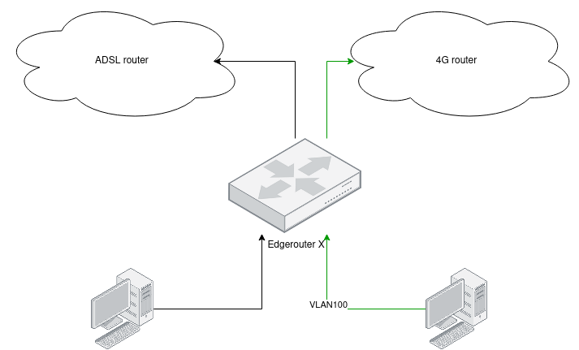

One of the problems that I faced in the past is how I switched from DSL to 4G connection. My primary internet connection is DSL, and things are bad when you try to upload something big or want to do a videocall without issues.
I used 4G over the phone, but the experience it's terrible. Also, it's not a smooth change: disconnect the cable, connect to your mobile wifi, etc. If you got a call, meanwhile you're using 4G connection, the connection goes down, a lot of downsides for a permanent workspace.
Over the last weeks, I'm running a new setup, where I still use ADSL as a primary connection, but If I use VLAN 100, I'll use an external 4G antenna. Let me explain how I build this setup.
Hardware needed
- Edgerouter X: This is the primary router; it does the LoadBalance.
- Zyxel LTE7460: The 4G modem that I found. The best thing is that it supports bridge mode, so no double NAT issues.
- Linux computer
- Wan connection
Edgerouter X, load balance based on VLAN
Edgerouter X is, in my opinion, one of the best purchases that you can do. An old, but a powerful router, where you can achieve many things with a super simple DSL (Domain-specific Language) config.
The main behaviour will be: SWITCH0 interface will support a VLAN 100, when traffic goes into this virtual interface, it'll use a modify rule that will send traffic to a different Load Balancer. Here is the config:
VLAN 100 definition:
switch switch0 {
address 192.168.25.1/24
description Local
firewall {
in {
modify balance
}
}
mtu 1500
switch-port {
interface eth0 {
}
interface eth1 {
}
interface eth2 {
}
vlan-aware disable
}
vif 100 {
firewall {
in {
modify balance_100
}
}
}
}
Load Balance definition:
load-balance {
group 4G {
interface eth4 {
}
interface pppoe0 {
failover-only
}
lb-local enable
lb-local-metric-change disable
}
group G {
interface pppoe0 {
}
interface pppoe1 {
}
interface eth4 {
failover-only
}
lb-local enable
lb-local-metric-change disable
}
}
Outbound Firewall modify rule:
modify balance_100 {
rule 10 {
action modify
description "do not balance lan to lan"
destination {
group {
network-group PRIVATE_NETS
}
}
log disable
modify {
table main
}
}
rule 20 {
action modify
description "do NOT load balance destination public address"
destination {
group {
address-group ADDRv4_pppoe0
}
}
modify {
table main
}
}
rule 21 {
action modify
description "do NOT load balance destination public address"
destination {
group {
address-group ADDRv4_pppoe1
}
}
modify {
table main
}
}
rule 30 {
action modify
description "do NOT load balance destination public address"
destination {
group {
address-group ADDRv4_eth4
}
}
modify {
table main
}
}
rule 100 {
action modify
log disable
modify {
lb-group 4G
}
}
}
Linux set VLAN on the fly.
When setting a VLAN on a Linux system, I always used vconfig, but I wanted something fast and no permanent networking configuration involved in this case.
Linux TC (Traffic-control) is not commonly used, but it has a lot of power to change interface datapath configurations on the fly. One of the options that you can do is adding a VLAN tag when a condition matches.
So, I made a simple script, it enables or disables the VLAN 100. The best way is to use QDISC(queueing discipline) filters on the egress, this is the main action:
tc qdisc add dev $interface handle 1: root prio
tc filter add dev $interface parent 1: protocol ip matchall action vlan push id $VLAN_TO_PUSH
If the traffic is IP, in my case, it will set the VLAN 100, and traffic goes over 4G connection. Actions can be more powerful such as port/IP filtering, etc..
The complete script is the following:
#!/bin/bash
ACTION=$1
export VLAN_TO_PUSH=100
echoerr() { echo "$@" 1>&2; }
function get_local_interfaces() {
LOCAL_INTERFACES=$(ip --json a show | jq -r '.[] | select((.operstate == "UP") and ((.addr_info?[0].local|tostring)|test("^192.*"))) | .ifname+"\t"+.addr_info?[0].local')
echo -n "$LOCAL_INTERFACES"
}
function disable_4g {
local interface=$1
echoerr "Disable 4G connection"
tc qdisc del dev $interface root
}
function enable_4g {
local interface=$1
echoerr "Enable 4G connection"
tc qdisc add dev $interface handle 1: root prio
tc filter add dev $interface parent 1: protocol ip matchall action vlan push id $VLAN_TO_PUSH
}
function is_interface_on_4g {
local interface=$1
tc filter show dev $interface parent 1: | grep "^filter" 1>&2
if [[ $? -eq 1 ]]; then
echoerr "Inferface '${interface}' does not have tc filter"
false
else
echoerr "Inferface '${interface}' contains tc filter"
true
fi
}
function toggle_interface() {
local interface=$1
if is_interface_on_4g $interface; then
disable_4g $interface
else
enable_4g $interface
fi
}
function toggle() {
IFS=$'\n'; for line in $(get_local_interfaces); do
local interface=$(echo -n $line | awk '{print $1}')
toggle_interface $interface
done
}
function list() {
local RESULT=""
IFS=$'\n'; for line in $(get_local_interfaces); do
local interface=$(echo -n $line | awk '{print $1}')
DEFAULT_MODE="DSL"
if is_interface_on_4g $interface; then
RESULT="${RESULT}${interface}=4G "
else
RESULT="${RESULT}${interface}=DSL "
fi
done
echo $RESULT
}
if [[ $ACTION == "toggle" ]]; then
toggle
else
list
fi
Argos Gnome Shell Extensions
Because I pay a lot of the 4G connection, I want to have something seamless and be notified when I use it. Argos Gnome Shell extension is the best way to get that info; a simple script displays if an interface is using DSL or 4G and I also add a toggle button, here is the complete script:
#!/usr/bin/env bash
export STATUS=$(~/bin/toggle_dsl.sh 2>/dev/null)
echo "${STATUS}"
echo "---"
echo "📡toggle | bash='~/bin/toggle_dsl.sh toggle' terminal=false"
Finally, this is the seamless setup, moving to 4G is easy; I do not need an external phone, I'm no longer worried about receiving calls. Because It uses a 4G antenna when ADSL is down, I can failover without problems! By far, this was one of the best productivity hacks that I made in 2020!
Yup, I already sign up on Startlink.
Cover image: https://pxhere.com/en/photo/1592827